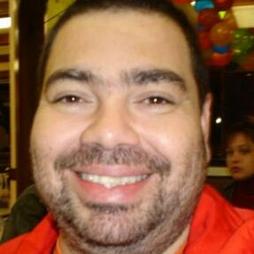

Paulo Sérgio Flores da Costa | WDD 130

Oi. Meu nome é Paulo Flores, moro em Porto Alegre, no Rio Grande do Sul, e sou membro de A Igreja de Jesus Cristo dos Santos dos Últimos Dias. Sou formado em Matemática e dediquei mais de vinte anos da minha carreira ao ensino como professor do ensino médio, além de já ter atuado nas áreas de vendas, montagem e manutenção de hardware e suporte técnico de TI. Hoje, sigo uma nova jornada acadêmica na BYU-Pathway Worldwide, cursando graduação em Desenvolvimento de Software. Nos meus estudos, exploro lógica de programação, Python, bancos de dados SQL, Git, HTML e CSS — aprendendo desde estruturação semântica e Box Model até variáveis de estilo e publicação de páginas. Nos momentos livres, gosto de resolver quebra-cabeças lógicos, organizar churrascos em família com minha filha e aproveitar uma boa série de investigação.